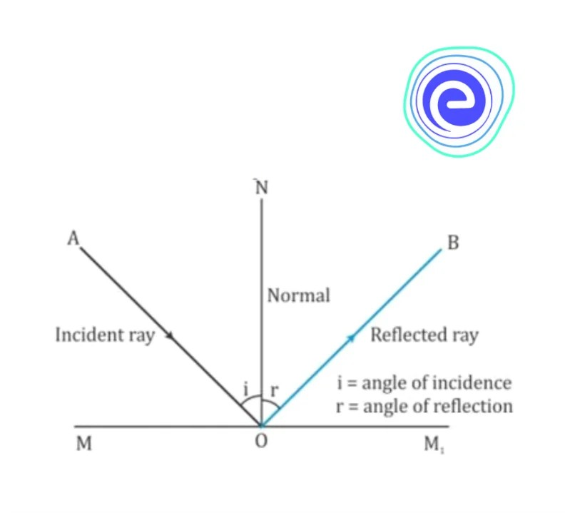
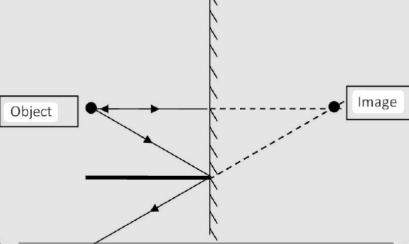
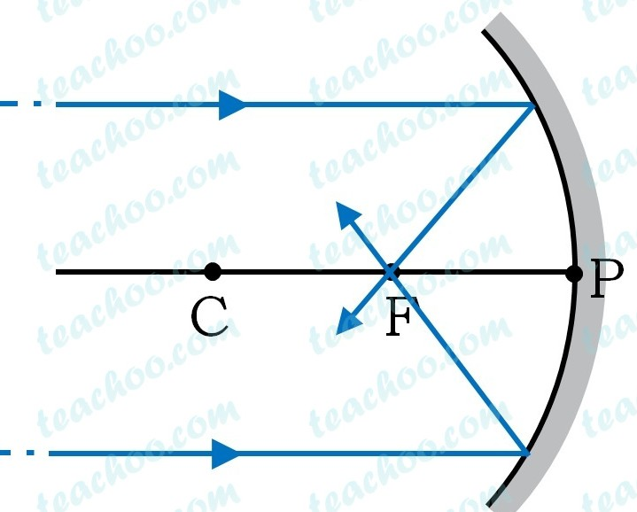
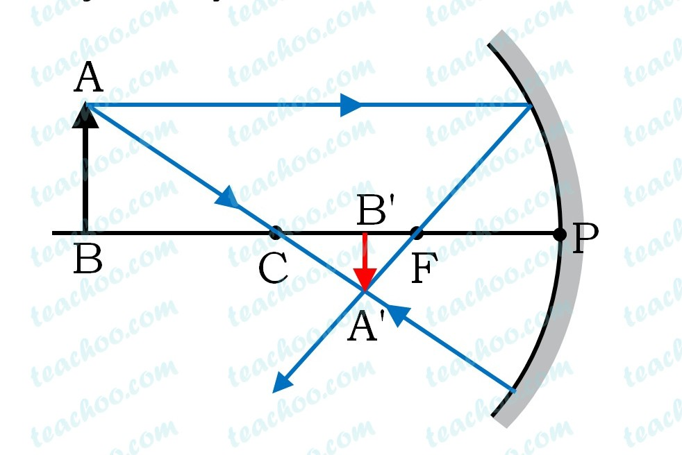

📘 इकाई 9 - प्रकाश
प्रकाश क्या है?
प्रकाश ऊर्जा का एक रूप है।
- हमारे चारों ओर की वस्तुओं को देखने के लिए प्रकाश आवश्यक है।
- प्रकाश हमें उन वस्तुओं को देखने में सक्षम बनाता है जिनसे यह आता है या जिनसे यह परावर्तित होता है।
प्रकाश की प्रकृति क्या है?
प्रकाश की प्रकृति –
- तरंग सिद्धांत के अनुसार – प्रकाश विद्युत चुम्बकीय तरंगों से बना होता है जिन्हें संचरण के लिए किसी भौतिक माध्यम की आवश्यकता नहीं होती।
- कण सिद्धांत के अनुसार – प्रकाश कणों से बना होता है जो अत्यधिक उच्च गति से सीधी रेखा में गमन करते हैं। प्रकाश को परिभाषित करने वाला प्राथमिक कण "फोटॉन" है।
प्रकाश के परावर्तन से आप क्या समझते हैं?
किसी वस्तु की सतह पर पड़ने वाली प्रकाश किरणों को वापस भेजने की प्रक्रिया को प्रकाश का परावर्तन कहते हैं।

जहाँ -
- दर्पण की सतह पर पड़ने वाली प्रकाश किरण को आपतित किरण कहते हैं।
- वह बिंदु जिस पर आपतित किरण दर्पण पर पड़ती है, आपतन बिंदु कहलाता है।
- दर्पण द्वारा वापस भेजी गई प्रकाश किरण को परावर्तित किरण कहते हैं।
आपतन कोण क्या है?
आपतन बिंदु पर अभिलंब के साथ आपतित किरण द्वारा बनाया गया कोण आपतन कोण कहलाता है। इसे i से प्रदर्शित किया जाता है।
परावर्तन कोण क्या है?
आपतन बिंदु पर अभिलंब के साथ परावर्तित किरण द्वारा बनाया गया कोण परावर्तन कोण कहलाता है। इसे r से प्रदर्शित किया जाता है।
प्रकाश के परावर्तन के नियम लिखिए।
प्रकाश के परावर्तन का नियम –
- परावर्तन कोण सदैव आपतन कोण के बराबर होता है। अर्थात् i = r
- आपतित किरण, परावर्तित किरण और अभिलंब तीनों एक ही समतल में होते हैं।
वस्तु (Object) क्या है?
जो कुछ भी प्रकाश किरणें उत्सर्जित करता है उसे वस्तु कहते हैं।
प्रतिबिम्ब (Image) क्या है? यह कितने प्रकार के होते हैं?
प्रतिबिम्ब एक प्रकाशीय आभास है जो तब उत्पन्न होता है जब किसी वस्तु से आने वाली प्रकाश किरणें किसी दर्पण से परावर्तित होती हैं।
ये दो प्रकार के होते हैं -
- वास्तविक प्रतिबिम्ब – वह प्रतिबिम्ब जिसे पर्दे पर प्राप्त किया जा सकता है, वास्तविक प्रतिबिम्ब कहलाता है। सिनेमा के पर्दे पर बनने वाला प्रतिबिम्ब वास्तविक प्रतिबिम्ब का उदाहरण है।
- आभासी प्रतिबिम्ब – वह प्रतिबिम्ब जिसे पर्दे पर प्राप्त नहीं किया जा सकता, आभासी प्रतिबिम्ब कहलाता है। इसे अवास्तविक प्रतिबिम्ब भी कहते हैं। समतल दर्पण में हमारे चेहरे का प्रतिबिम्ब आभासी प्रतिबिम्ब का उदाहरण है।
वास्तविक प्रतिबिम्ब और आभासी प्रतिबिम्ब में अंतर लिखिए।
वास्तविक प्रतिबिम्ब | आभासी प्रतिबिम्ब |
|---|
1. वास्तविक प्रतिबिम्ब प्रकाश की दो वास्तविक किरणों के वास्तविक प्रतिच्छेदन से बनते हैं। | 1. आभासी प्रतिबिम्ब प्रकाश की दो किरणों के आभासी (प्रतीत होने वाले) प्रतिच्छेदन से बनते हैं। |
2. यहाँ किरणें वास्तव में प्रतिबिम्ब बिंदु पर मिलती हैं। | 2. यहाँ किरणें प्रतिबिम्ब बिंदु से अपसरित होती हुई प्रतीत होती हैं। |
3. इसे पर्दे पर प्राप्त किया जा सकता है और यह सदैव उल्टा (अवत) होता है। | 3. इसे पर्दे पर प्राप्त नहीं किया जा सकता और यह सदैव सीधा (सुलटा) होता है। |
4. उदाहरण: जब वस्तु को फोकस से परे रखा जाता है तो अवतल दर्पण द्वारा बना प्रतिबिम्ब। | 4. उदाहरण: समतल दर्पण या उत्तल दर्पण द्वारा बना प्रतिबिम्ब। |
समतल दर्पण में प्रतिबिम्ब के निर्माण को चित्र द्वारा दर्शाइए।

समतल दर्पण द्वारा बनने वाले प्रतिबिम्ब की प्रकृति आभासी और सीधी होती है तथा समतल दर्पण द्वारा बने प्रतिबिम्ब का आकार वस्तु के आकार के बराबर होता है।
पार्श्व परावर्तन (Lateral Inversion) क्या है?
जब किसी वस्तु को समतल दर्पण के सामने रखा जाता है, तो वस्तु का दायाँ भाग प्रतिबिम्ब का बायाँ भाग प्रतीत होता है और वस्तु का बायाँ भाग प्रतिबिम्ब का दायाँ भाग प्रतीत होता है। वस्तु और उसके दर्पण प्रतिबिम्ब की भुजाओं के इस परिवर्तन को पार्श्व परावर्तन कहते हैं।
समतल दर्पण द्वारा बने प्रतिबिम्ब के गुण क्या हैं?
समतल दर्पण द्वारा बने प्रतिबिम्ब के गुण –
- समतल दर्पण में बना प्रतिबिम्ब आभासी होता है। इसे पर्दे पर प्राप्त नहीं किया जा सकता।
- समतल दर्पण में बना प्रतिबिम्ब सीधा होता है। यह वस्तु के समान ही सीधी दिशा में होता है।
- समतल दर्पण में प्रतिबिम्ब वस्तु के समान आकार का होता है।
- समतल दर्पण द्वारा बना प्रतिबिम्ब दर्पण के पीछे उतनी ही दूरी पर होता है जितनी दूरी पर वस्तु दर्पण के सामने होती है।
- समतल दर्पण में बना प्रतिबिम्ब पार्श्व-परावर्तित होता है।
समतल दर्पण के उपयोग लिखिए।
समतल दर्पण के उपयोग –
- समतल दर्पणों का उपयोग स्वयं को देखने के लिए किया जाता है। हमारी ड्रेसिंग टेबल और स्नानघरों में लगे दर्पण समतल दर्पण होते हैं।
- कुछ दुकानों की भीतरी दीवारों पर समतल दर्पण लगाए जाते हैं ताकि वे बड़ी दिखाई दें।
- कुछ व्यस्त सड़कों पर अंधे मोड़ों पर समतल दर्पण लगाए जाते हैं ताकि चालक दूसरी ओर से आने वाले वाहनों को देख सकें और दुर्घटनाओं को रोका जा सके।
- समतल दर्पणों का उपयोग परिदर्शी (पेरिस्कोप) बनाने में किया जाता है।
गोलीय दर्पण (Spherical Mirror) क्या है? गोलीय दर्पण कितने प्रकार के होते हैं? 2019/20
गोलीय दर्पण वह दर्पण है जिसकी परावर्तक सतह काँच के खोखले गोले का भाग होती है।
गोलीय दर्पण दो प्रकार के होते हैं –
- अवतल दर्पण – अवतल दर्पण वह गोलीय दर्पण है जिसमें प्रकाश का परावर्तन अवतल सतह पर होता है।
- उत्तल दर्पण – उत्तल दर्पण वह गोलीय दर्पण है जिसमें प्रकाश का परावर्तन उत्तल सतह पर होता है।
निम्नलिखित पदों की परिभाषाएँ दीजिए।
- ध्रुव (Pole) – गोलीय दर्पण के केंद्र को उसका ध्रुव कहते हैं। इसे P से दर्शाया जाता है।
- वक्रता केंद्र (2019)– गोलीय दर्पण का वक्रता केंद्र काँच के उस खोखले गोले का केंद्र होता है जिसका दर्पण एक भाग है। इसे C से दर्शाया जाता है।
- वक्रता त्रिज्या(2020)– गोलीय दर्पण की वक्रता त्रिज्या काँच के उस खोखले गोले की त्रिज्या होती है जिसका दर्पण एक भाग है। इसे R से दर्शाया जाता है।
- मुख्य अक्ष(2020)– गोलीय दर्पण के वक्रता केंद्र और ध्रुव से गुजरने वाली सीधी रेखा को उसका मुख्य अक्ष कहते हैं।
- द्वारक (Aperture) – दर्पण का वह भाग जिससे प्रकाश का परावर्तन वास्तव में होता है, दर्पण का द्वारक कहलाता है।
अवतल दर्पण के लिए -
- मुख्य फोकस(2019/24)– अवतल दर्पण का मुख्य फोकस उसके मुख्य अक्ष पर वह बिंदु है जहाँ मुख्य अक्ष के समांतर और उसके निकट सभी प्रकाश किरणें अवतल दर्पण से परावर्तन के बाद अभिसरित होती हैं। इसे F से दर्शाया जाता है।
अवतल दर्पण का फोकस वास्तविक होता है।
अवतल दर्पण द्वारा उसके फोकस पर सूर्य का प्रतिबिम्ब बनाया जा सकता है।
- फोकस दूरी(2020)– अवतल दर्पण की फोकस दूरी उसके ध्रुव और मुख्य फोकस के बीच की दूरी होती है। यह सदैव ऋणात्मक होती है। इसे f से दर्शाया जाता है।
उत्तल दर्पण के लिए –
- मुख्य फोकस – उत्तल दर्पण का मुख्य फोकस उसके मुख्य अक्ष पर वह बिंदु है जिससे, मुख्य अक्ष के समांतर प्रकाश किरणों का समूह, उत्तल दर्पण से परावर्तन के बाद अपसरित होता प्रतीत होता है। इसे F से दर्शाया जाता है।
उत्तल दर्पण का फोकस आभासी स्थिति में होता है।
- फोकस दूरी - उत्तल दर्पण की फोकस दूरी उसके ध्रुव और मुख्य फोकस के बीच की दूरी होती है। यह सदैव धनात्मक होती है। इसे f से दर्शाया जाता है।
अवतल दर्पण द्वारा विभिन्न स्थितियों में बनने वाले प्रतिबिम्बों को चित्रों सहित समझाइए।
अवतल दर्पण द्वारा बनने वाले प्रतिबिम्ब का प्रकार दर्पण के सामने वस्तु की स्थिति पर निर्भर करता है।
- जब वस्तु अनंत पर हो – जब वस्तु अवतल दर्पण से अनंत दूरी पर हो, तो बनने वाला प्रतिबिम्ब फोकस (F) पर, वास्तविक और उल्टा तथा वस्तु से बहुत छोटा होता है।

- जब वस्तु अवतल दर्पण के वक्रता केंद्र से परे हो – जब वस्तु को अवतल दर्पण के वक्रता केंद्र (C) से परे रखा जाता है, तो प्रतिबिम्ब फोकस और वक्रता केंद्र के बीच, वास्तविक और उल्टा तथा वस्तु से छोटा बनता है।

- जब वस्तु को अवतल दर्पण के वक्रता केंद्र पर रखा जाए – जब वस्तु को अवतल दर्पण के वक्रता केंद्र (C) पर रखा जाता है, तो बनने वाला प्रतिबिम्ब वक्रता केंद्र (C) पर, वास्तविक और उल्टा तथा वस्तु के बराबर आकार का होता है।
- जब वस्तु को फोकस और वक्रता केंद्र के बीच रखा जाए – जब वस्तु को अवतल दर्पण के फोकस(F) और वक्रता केंद्र (C) के बीच रखा जाता है, तो बनने वाला प्रतिबिम्ब वक्रता केंद्र से परे, वास्तविक और उल्टा तथा वस्तु से बड़ा होता है।
- जब वस्तु को अवतल दर्पण के फोकस पर रखा जाए – जब वस्तु को अवतल दर्पण के फोकस पर रखा जाता है, तो प्रतिबिम्ब अनंत पर, वास्तविक और उल्टा तथा अत्यधिक आवर्धित होता है।
- जब वस्तु को दर्पण के ध्रुव और फोकस के बीच रखा जाए – जब वस्तु को अवतल दर्पण के ध्रुव (P) और फोकस (F) के बीच रखा जाता है, तो बनने वाला प्रतिबिम्ब दर्पण के पीछे, आभासी और सीधा तथा वस्तु से बड़ा होता है।
अवतल दर्पण के उपयोग लिखिए।
अवतल दर्पण के उपयोग
- इसका उपयोग शेविंग के लिए चेहरे का बड़ा प्रतिबिम्ब देखने में किया जाता है।
- इसका उपयोग दंत चिकित्सकों द्वारा रोगियों के दाँतों का बड़ा प्रतिबिम्ब देखने के लिए किया जाता है।
- प्रकाश की तीव्र किरण-पुंज प्राप्त करने के लिए इसका उपयोग टॉर्च, वाहनों की हेडलाइट और सर्च लाइट में परावर्तक के रूप में किया जाता है।
- इसका उपयोग डॉक्टरों के हेड-मिरर के रूप में किया जाता है ताकि लैंप से आने वाले प्रकाश को रोगी के जाँच किए जाने वाले शरीर के अंग पर केंद्रित किया जा सके।
- सौर भट्टियों को गर्म करने के लिए सूर्य की किरणों को केंद्रित करने हेतु सौर ऊर्जा के क्षेत्र में बड़े अवतल दर्पणों का उपयोग किया जाता है।
निम्नलिखित परिस्थितियों में प्रयुक्त होने वाले दर्पण के प्रकार का नाम बताइए:
(a) कार की हेडलाइट।
(b) वाहन का साइड/रियर-व्यू दर्पण।
(c) सौर भट्टी।
(a) कार की हेडलाइट के लिए, परावर्तन के बाद प्रकाश की तीव्र किरण-पुंज प्राप्त करने हेतु अवतल दर्पण का उपयोग किया जाता है।
(b) वाहन के साइड/रियर-व्यू दर्पण के लिए उत्तल दर्पण का उपयोग किया जाता है। उत्तल दर्पण वाहनों का सीधा और छोटा प्रतिबिम्ब बनाता है तथा पीछे का व्यापक दृश्य प्रदान करता है।
(c) सौर भट्टी में परावर्तक के रूप में अवतल दर्पण का उपयोग किया जाता है, यह सूर्य के प्रकाश को एक बिंदु पर केंद्रित करता है जहाँ तापमान तेजी से बढ़कर 180°C से 200°C तक पहुँच जाता है।
उत्तल दर्पण द्वारा बनने वाले प्रतिबिम्बों को चित्रों सहित समझाइए।
जब वस्तु को उत्तल दर्पण के सामने ध्रुव (P) और अनंत के बीच कहीं भी रखा जाता है, तो बनने वाला प्रतिबिम्ब दर्पण के पीछे ध्रुव (P) और फोकस (F) के बीच, आभासी और सीधा तथा वस्तु से छोटा होता है।
उत्तल दर्पण के उपयोग लिखिए।
उत्तल दर्पण के उपयोग
- इसका उपयोग वाहनों में रियर-व्यू दर्पण के रूप में पीछे के यातायात को देखने के लिए किया जाता है।
- बड़े उत्तल दर्पणों का उपयोग दुकानों में सुरक्षा दर्पण के रूप में किया जाता है।
वाहनों में पीछे का दृश्य देखने के लिए किस दर्पण का उपयोग किया जाता है?
वाहनों में रियर-व्यू दर्पण के रूप में उत्तल दर्पण को प्राथमिकता दी जाती है क्योंकि यह सदैव सीधा, यद्यपि छोटा, प्रतिबिम्ब देता है। बाहर की ओर वक्र होने के कारण उनका दृष्टि क्षेत्र भी व्यापक होता है।
दर्पण सूत्र (Mirror Formula) लिखिए।
दर्पण सूत्र किसी गोलीय दर्पण की वस्तु दूरी (u), प्रतिबिम्ब दूरी (v) और फोकस दूरी (f) के बीच का गणितीय संबंध है।
1/f = 1/u + 1/v जहाँ:
- f = दर्पण की फोकस दूरी
- v = प्रतिबिम्ब दूरी
- u = वस्तु दूरी
दर्पण का रैखिक आवर्धन (Linear Magnification) क्या है?
दर्पण का रैखिक आवर्धन (m) प्रतिबिम्ब की ऊँचाई (I) और वस्तु की ऊँचाई (O) का अनुपात है।
m= I/O = −v/u जहाँ:
- I = प्रतिबिम्ब की ऊँचाई
- O = वस्तु की ऊँचाई
- v = प्रतिबिम्ब दूरी
- u = वस्तु दूरी
समतल दर्पण द्वारा उत्पन्न आवर्धन +1 है। इसका क्या अर्थ है?
- वस्तु दूरी (u) सदैव ऋणात्मक होती है, क्योंकि वस्तु दर्पण के सामने रखी जाती है।
- प्रतिबिम्ब दूरी (v) होती है
- वास्तविक प्रतिबिम्ब के लिए ऋणात्मक
- आभासी प्रतिबिम्ब के लिए धनात्मक
- आवर्धन (m) होता है
- वास्तविक प्रतिबिम्ब के लिए ऋणात्मक
- आभासी प्रतिबिम्ब के लिए धनात्मक
- फोकस दूरी (f) होती है
- अवतल दर्पण के लिए ऋणात्मक
- उत्तल दर्पण के लिए धनात्मक
प्रकाश के अपवर्तन से आप क्या समझते हैं? प्रकाश के अपवर्तन का नियम लिखिए।
प्रकाश का अपवर्तन प्रकाश किरणों का एक पारदर्शी माध्यम से दूसरे पारदर्शी माध्यम में जाते समय मुड़ना है।
- यदि प्रकाश सघन माध्यम में प्रवेश करता है, तो यह अभिलंब की ओर मुड़ता है।
- यदि प्रकाश विरल माध्यम में प्रवेश करता है, तो यह अभिलंब से दूर मुड़ता है।
परावर्तन के नियम
- आपतन कोण परावर्तन कोण के बराबर होता है,
- आपतित किरण, आपतन बिंदु पर दर्पण का अभिलंब और परावर्तित किरण, तीनों एक ही समतल में होते हैं।
जब प्रकाश की किरण विरल माध्यम से सघन माध्यम में प्रवेश करती है तो क्या होता है। (M. P. 2023)
जब प्रकाश की किरण प्रकाशीय रूप से विरल माध्यम से प्रकाशीय रूप से सघन माध्यम में जाती है तो यह सदैव अभिलंब की ओर मुड़ती है।
जब प्रकाश की किरण सघन माध्यम से विरल माध्यम में प्रवेश करती है तो क्या होता है। (M. P. 2023)
जब प्रकाश की किरण प्रकाशीय रूप से सघन माध्यम से प्रकाशीय रूप से विरल माध्यम में जाती है तो यह सदैव अभिलंब से दूर मुड़ती है।
वायु में गमन करती हुई प्रकाश की एक किरण तिरछी होकर जल में प्रवेश करती है। क्या प्रकाश किरण अभिलंब की ओर मुड़ेगी या अभिलंब से दूर? क्यों?
जब प्रकाश की किरण तिरछी होकर वायु से जल में जाती है, तो यह अभिलंब की ओर मुड़ती है।
कारण:
जब प्रकाश विरल माध्यम (जैसे वायु) से सघन माध्यम (जैसे जल) में प्रवेश करता है, तो उसकी चाल कम हो जाती है। इस चाल में कमी के कारण, किरण अभिलंब की ओर मुड़ जाती है।
लेंस (Lens) क्या है?
लेंस काँच का एक पारदर्शी टुकड़ा है जिसकी दो अपवर्तक सतहें होती हैं, जिनमें से कम से कम एक वक्र (गोलाकार) होती है।
लेंस कितने प्रकार के होते हैं?
लेंस मुख्य रूप से दो प्रकार के होते हैं:
- उत्तल लेंस (अभिसारी लेंस): उत्तल लेंस बीच में मोटा और किनारों पर पतला होता है। यह प्रकाश की समांतर किरणों को अभिसरित (एक साथ) करता है।
- अवतल लेंस (अपसारी लेंस): अवतल लेंस बीच में पतला और किनारों पर मोटा होता है। यह प्रकाश की समांतर किरणों को अपसरित (फैलाता) करता है।
उत्तल लेंस को अभिसारी लेंस क्यों कहा जाता है?
जब प्रकाश की समांतर किरणें इससे गुजरती हैं, तो वे अपवर्तित होकर लेंस के दूसरी ओर एक ही बिंदु (फोकस) पर मिलती हैं। इसलिए, इसे अभिसारी लेंस कहा जाता है।
अवतल लेंस को अपसारी लेंस क्यों कहा जाता है?
जब प्रकाश की समांतर किरणें इससे गुजरती हैं, तो वे फैल (अपसरित हो) जाती हैं और लेंस के पीछे एक बिंदु (फोकस) से आती हुई प्रतीत होती हैं। इसलिए, इसे अपसारी लेंस कहा जाता है।
उभयोत्तल (बाईकॉन्वेक्स) लेंस किसे कहते हैं? (Μ. Ρ. 2023)
वह लेंस जिसकी दोनों सतहें गोलाकार होकर बाहर की ओर उभरी होती हैं, उसे उभयोत्तल या द्वि-उत्तल लेंस कहते हैं।
लेंस से संबंधित महत्वपूर्ण शब्दों को परिभाषित कीजिए।
लेंस के अध्ययन में प्रयुक्त होने वाले महत्वपूर्ण शब्द निम्नलिखित हैं:
- प्रकाशिक केंद्र (O): लेंस के ज्यामितीय केंद्र को उसका प्रकाशिक केंद्र कहते हैं।
प्रकाशिक केंद्र से गुजरने वाली प्रकाश किरण अपने पथ से विचलित नहीं होती।
- मुख्य अक्ष: लेंस की दोनों गोलाकार सतहों के वक्रता केंद्रों को मिलाने वाली सीधी रेखा को मुख्य अक्ष कहते हैं।
- उत्तल लेंस का मुख्य फोकस (F): मुख्य अक्ष पर वह बिंदु जहाँ मुख्य अक्ष के समांतर प्रकाश किरणें उत्तल लेंस में अपवर्तन के बाद अभिसरित होती हैं, मुख्य फोकस कहलाता है।
- अवतल लेंस का मुख्य फोकस (F): मुख्य अक्ष पर वह बिंदु जहाँ से मुख्य अक्ष के समांतर प्रकाश किरणें अवतल लेंस में अपवर्तन के बाद अपसरित होती प्रतीत होती हैं, मुख्य फोकस कहलाता है।
- फोकस दूरी (f): लेंस के प्रकाशिक केंद्र (O) और मुख्य फोकस (F) के बीच की दूरी को फोकस दूरी कहते हैं।
- वक्रता केंद्र (C): उस गोले का केंद्र जिसका लेंस की सतह एक भाग है, उसे वक्रता केंद्र कहते हैं।
लेंस के दो वक्रता केंद्र होते हैं — प्रत्येक सतह के लिए एक।
- द्वारक (Aperture): लेंस का वह भाग जिससे प्रकाश वास्तव में गुजरता है, लेंस का द्वारक कहलाता है।
उत्तल लेंस के लिए मानक किरण-अंकन नियम दीजिए।
किरण 1: मुख्य अक्ष के समांतर प्रकाश की किरण अपवर्तन के बाद लेंस के दूसरी ओर फोकस से होकर गुजरती है।
किरण 2: प्रकाशिक केंद्र (O) से गुजरने वाली प्रकाश किरण बिना किसी विचलन के लेंस से सीधी गुजर जाती है।
किरण 3: प्रथम मुख्य फोकस (F1) से गुजरने वाली प्रकाश किरण अपवर्तन के बाद मुख्य अक्ष के समांतर निकलती है।
उत्तल लेंस में वस्तु की विभिन्न स्थितियों के लिए बनने वाले प्रतिबिम्ब की प्रकृति, आकार और स्थिति का वर्णन कीजिए।
उत्तल लेंस में वस्तु की विभिन्न स्थितियों के लिए प्रतिबिम्ब का निर्माण।
- वस्तु अनंत पर प्रतिबिम्ब की स्थिति: फोकस पर।
प्रतिबिम्ब का आकार: अत्यधिक छोटा, या बिंदु के समान।
प्रतिबिम्ब की प्रकृति: वास्तविक और उल्टा।
- वस्तु (2F1) से परे
- प्रतिबिम्ब की स्थिति: लेंस की दूसरी ओर फोकस (F2) और दोहरी फोकस दूरी (2F2) के बीच।
प्रतिबिम्ब का आकार: छोटा (वस्तु से छोटा)।
प्रतिबिम्ब की प्रकृति: वास्तविक और उल्टा।
- वस्तु (2F1) पर प्रतिबिम्ब की स्थिति: लेंस की दूसरी ओर (2F2) पर।
प्रतिबिम्ब का आकार: वस्तु के समान आकार का।
प्रतिबिम्ब की प्रकृति: वास्तविक और उल्टा।
- वस्तु (F1) और (2F1) के बीच प्रतिबिम्ब की स्थिति: लेंस की दूसरी ओर (2F2) से परे।
प्रतिबिम्ब का आकार: आवर्धित (वस्तु से बड़ा)।
प्रतिबिम्ब की प्रकृति: वास्तविक और उल्टा।
- वस्तु (F1) पर प्रतिबिम्ब की स्थिति: अनंत पर।
प्रतिबिम्ब का आकार: अत्यधिक आवर्धित। प्रतिबिम्ब की प्रकृति: वास्तविक और उल्टा।
- वस्तु प्रकाशिक केंद्र (O) और (F1) के बीच प्रतिबिम्ब का आकार: आवर्धित (वस्तु से बड़ा)।
प्रतिबिम्ब की प्रकृति: आभासी और सीधा (पर्दे पर प्रक्षेपित नहीं किया जा सकता)। यही एक साधारण आवर्धक लेंस (मैग्निफाइंग ग्लास) के पीछे का सिद्धांत है।
उत्तल लेंस के उपयोग लिखिए।
उत्तल लेंस निम्नलिखित उद्देश्यों के लिए उपयोग किए जाते हैं:
- आवर्धक लेंस (मैग्निफाइंग ग्लास) में – छोटी वस्तुओं का बड़ा प्रतिबिम्ब देखने के लिए।
- सूक्ष्मदर्शी (माइक्रोस्कोप) में – अभिदृश्यक और नेत्रिका लेंस के रूप में।
- कैमरों में – प्रकाश को केंद्रित करने और वास्तविक प्रतिबिम्ब बनाने के लिए।
- प्रोजेक्टरों में – पर्दे पर बड़े प्रतिबिम्ब उत्पन्न करने के लिए।
- मानव नेत्र और चश्मों में – दूरदृष्टि दोष (हाइपरमेट्रोपिया) को ठीक करने के लिए।
अवतल लेंस के लिए मानक किरण-अंकन नियम दीजिए।
अवतल (अपसारी) लेंस के लिए किरण आरेख बनाने हेतु निम्नलिखित मानक नियम हैं:
नियम 1: मुख्य अक्ष के समांतर प्रकाश की किरण अपवर्तन के बाद लेंस के उसी ओर के फोकस (F₁) से अपसरित होती प्रतीत होती है।
नियम 2: लेंस के प्रकाशिक केंद्र (O) की ओर जाने वाली प्रकाश किरण बिना विचलन के गुजरती है (यह बिना मुड़े सीधी गुजरती है)।
नियम 3: लेंस की दूसरी ओर के फोकस (F₂) की ओर निर्देशित प्रकाश किरण अपवर्तन के बाद मुख्य अक्ष के समांतर निकलती है।
अवतल लेंस द्वारा बने प्रतिबिम्ब की प्रकृति, आकार और स्थिति का वर्णन कीजिए।
प्रतिबिम्ब की प्रकृति।
- प्रतिबिम्ब की प्रकृति: आभासी
- प्रतिबिम्ब का आकार: वस्तु से छोटा (संकुचित)
- प्रतिबिम्ब की स्थिति: लेंस और वस्तु की ही ओर स्थित फोकस के बीच
- दिशा: सीधा
अवतल लेंस के उपयोग लिखिए।
अवतल लेंस के उपयोग।
- निकट दृष्टि दोष (मायोपिया) को ठीक करना: अवतल लेंस उन लोगों के चश्मों में उपयोग किए जाते हैं जो पास की वस्तुओं को स्पष्ट देख सकते हैं परंतु दूर की वस्तुएँ धुंधली दिखाई देती हैं।
- दरवाजों में पीपहोल: व्यापक दृष्टि क्षेत्र प्रदान करने के लिए इनका उपयोग सुरक्षा पीपहोल में किया जाता है।
- कैमरों और प्रकाशीय उपकरणों में: अवतल लेंस कुछ प्रकाशीय उपकरणों में प्रकाश के अपसरण को नियंत्रित करने और आभासी प्रतिबिम्ब बनाने में सहायक होते हैं।
- लेजर किरणें: इनका उपयोग लेजर किरणों को अपसरित करने के लिए किया जाता है।
- छोटी वस्तुओं के लिए आवर्धक उपकरणों में: प्रतिबिम्ब का आकार समायोजित करने के लिए कभी-कभी प्रकाशीय प्रणालियों में उत्तल लेंस के साथ संयोजित किया जाता है।
लेंस की क्षमता (Power) के बारे में आप क्या समझते हैं? इसका सूत्र लिखिए। (M. P. 2019 Suppl., 20, 21)
लेंस की क्षमता, उस पर पड़ने वाली प्रकाश किरणों को अभिसरित करने की लेंस की योग्यता है।
लेंस की क्षमता उसकी फोकस दूरी (मीटर में) के व्युत्क्रम के रूप में परिभाषित की जाती है। इसे अक्षर (P) से दर्शाया जाता है।
P = 1/f (मीटर में) जहाँ:
- P = लेंस की क्षमता
- f = लेंस की फोकस दूरी (मीटर में) लेंस की क्षमता का SI मात्रक डाइऑप्टर (D) है।
डाइऑप्टर (Diopter) क्या है?
डाइऑप्टर उस लेंस की क्षमता के रूप में परिभाषित किया जाता है जिसकी फोकस दूरी 1 मीटर हो।
- उत्तल लेंस → धनात्मक क्षमता (f धनात्मक है)
- अवतल लेंस → ऋणात्मक क्षमता (f ऋणात्मक है)
लेंस सूत्र (Lens Formula) क्या है?
लेंस सूत्र किसी लेंस की वस्तु दूरी (u), प्रतिबिम्ब दूरी (v) और फोकस दूरी (f) के बीच संबंध देता है।
1/f = 1/v - 1/u जहाँ:
- f = लेंस की फोकस दूरी
- v = प्रतिबिम्ब दूरी
- u = वस्तु दूरी
लेंस का रैखिक आवर्धन (Linear Magnification) क्या है?
लेंस का रैखिक आवर्धन (m) प्रतिबिम्ब की ऊँचाई (I) और वस्तु की ऊँचाई (O) का अनुपात है।
m= I/O = v/u जहाँ:
- I = प्रतिबिम्ब की ऊँचाई
- O = वस्तु की ऊँचाई
- v = प्रतिबिम्ब दूरी
- u = वस्तु दूरी
चिह्न परिपाटी: अवतल और उत्तल लेंसों से संबंधित संख्यात्मक समस्याओं के लिए, लेंस सूत्रों में संकेतों का उपयोग करने हेतु कार्तीय चिह्न परिपाटी का उपयोग किया जाता है।
इस परिपाटी के अनुसार, सभी दूरियाँ मुख्य अक्ष के अनुदिश मापी जाती हैं, जिसमें लेंस का प्रकाशिक केंद्र मूल बिंदु होता है।
- वस्तु दूरी (u) → सदैव ऋणात्मक (-)
- प्रतिबिम्ब दूरी (v):
- यदि प्रतिबिम्ब वास्तविक है → धनात्मक (+)
- यदि प्रतिबिम्ब आभासी है → ऋणात्मक (-)
- आवर्धन (m):
- यदि प्रतिबिम्ब वास्तविक है → ऋणात्मक (-)
- यदि प्रतिबिम्ब आभासी है → धनात्मक (+)
- फोकस दूरी (f):
- उत्तल लेंस के लिए → f धनात्मक (+)
- अवतल लेंस के लिए → f ऋणात्मक (-)
- वस्तु की ऊँचाई (O):
- मुख्य अक्ष के ऊपर → धनात्मक (+)
- मुख्य अक्ष के नीचे → ऋणात्मक (-)
- प्रतिबिम्ब की ऊँचाई (I):
- वास्तविक प्रतिबिम्ब → ऋणात्मक (-)
- आभासी प्रतिबिम्ब → धनात्मक (+)
बहुविकल्पीय प्रश्न (Multiple Choice Questions)
- समतल दर्पण द्वारा बना प्रतिबिम्ब है — आभासी और सीधा
- समतल दर्पण की फोकस दूरी है — अनंत
- दंत चिकित्सकों द्वारा प्रयुक्त दर्पण है — अवतल दर्पण
- वाहनों में रियर-व्यू दर्पण के रूप में प्रयुक्त दर्पण है — उत्तल दर्पण
- गोलीय दर्पण के केंद्र को कहते हैं — वक्रता केंद्र
- ध्रुव और वक्रता केंद्र से गुजरने वाली रेखा है — मुख्य अक्ष
- दर्पण की फोकस दूरी (f) वक्रता त्रिज्या (R) से इस प्रकार संबंधित है — f = R/2
- वह दर्पण जो वास्तविक और आभासी दोनों प्रकार के प्रतिबिम्ब बना सकता है — अवतल दर्पण
- अवतल लेंस की क्षमता होती है — ऋणात्मक
- अवतल लेंस द्वारा बना प्रतिबिम्ब सदैव होता है — आभासी, सीधा और छोटा
- उत्तल लेंस की फोकस दूरी होती है — धनात्मक
- लेंस के प्रकाशिक केंद्र से गुजरने वाली किरण — बिना विचलन के गुजरती है
- दर्पण सूत्र है — 1/f = 1/v + 1/u
- लेंस सूत्र है — 1/f = 1/v - 1/u
- लेंस की क्षमता का मात्रक है — डाइऑप्टर (D)
रिक्त स्थानों की पूर्ति कीजिए
- समतल दर्पण द्वारा बना प्रतिबिम्ब आभासी और सीधा होता है।
- दर्पण की फोकस दूरी उसकी वक्रता त्रिज्या की आधी होती है।
- प्रकाश को अपसरित करने वाला दर्पण उत्तल दर्पण कहलाता है।
- लेंस की क्षमता का SI मात्रक डाइऑप्टर है।
- उत्तल लेंस को अभिसारी लेंस भी कहा जाता है।
सही जोड़ी मिलाइए (Match the Following)
स्तम्भ अ | स्तम्भ ब |
|---|
1. अवतल दर्पण | (a) दंत चिकित्सक द्वारा प्रयुक्त |
2. उत्तल दर्पण | (b) रियर-व्यू दर्पण के रूप में प्रयुक्त |
3. उत्तल लेंस | (c) अभिसारी लेंस |
4. अवतल लेंस | (d) अपसारी लेंस |
5. समतल दर्पण | (e) प्रतिबिम्ब सदैव आभासी होता है |